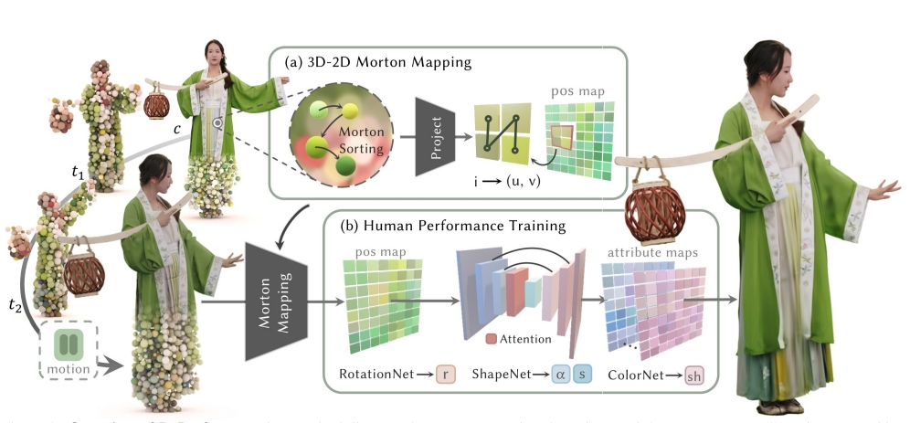
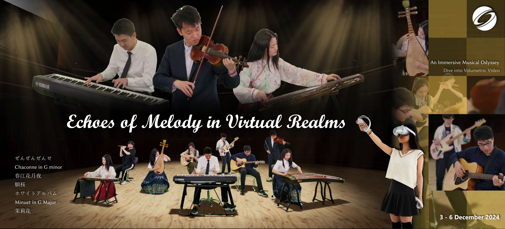
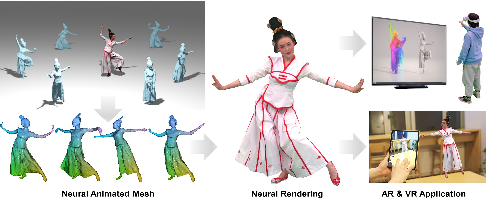
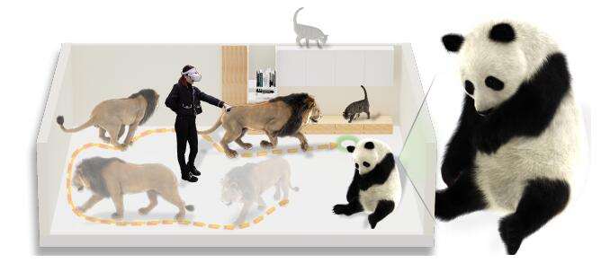
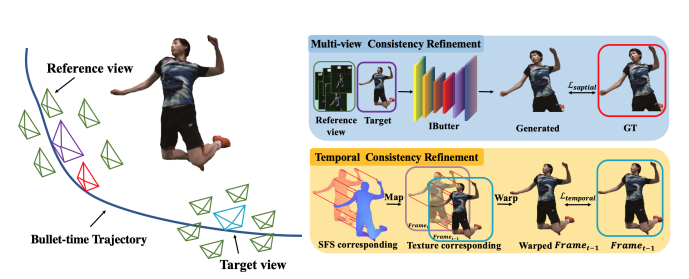
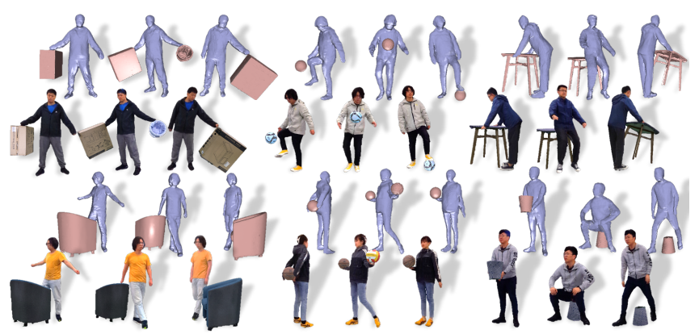

Topology-Aware Optimization of Gaussian Primitives for Human-Centric Volumetric Videos
SIGGRAPH Asia 2025
Yuheng Jiang, Chengcheng Guo, Yize Wu, Yu Hong, Shengkun Zhu, Zhehao Shen, Yingliang Zhang, Shaohui Jiao, Zhuo Su, Lan Xu, Marc Habermann, Christian Theobalt

RePerformer: Immersive Human-centric Volumetric Videos from Playback to Photoreal Reperformance
CVPR 2025
Yuheng Jiang*, Zhehao Shen*, Chengcheng Guo, Yu Hong, Zhuo Su, Yingliang Zhang, Marc Habermann, Lan Xu

Robust Dual Gaussian Splatting for Immersive Human-centric Volumetric Videos
SIGGRAPH Asia 2024 (TOG)
Yuheng Jiang, Zhehao Shen, Yu Hong, Chengcheng Guo, Yize Wu, Yingliang Zhang, Jingyi Yu, Lan Xu
HiFi4G: High-Fidelity Human Performance Rendering via Compact Gaussian Splatting
CVPR 2024
Yuheng Jiang, Zhehao Shen, Penghao Wang, Zhuo Su, Yu Hong, Yingliang Zhang, Jingyi Yu, Lan Xu
Instant-NVR: Instant Neural Volumetric Rendering for Human-object Interactions from Monocular RGBD Stream
CVPR 2023
Yuheng Jiang*, Kaixin Yao*, Zhuo Su, Zhehao Shen, Haimin Luo, Lan Xu

Human Performance Modeling and Rendering via Neural Animated Mesh
SIGGRAPH Asia 2022
Fuqiang Zhao, Yuheng Jiang, Kaixin Yao, Jiakai Zhang, Liao Wang, Haizhao Dai, Yuhui Zhong, Yingliang Zhang, Minye Wu, Lan Xu, Jingyi Yu

Artemis: Articulated Neural Pets with Appearance and Motion Synthesis
SIGGRAPH 2022
Haimin Luo, Teng Xu, Yuheng Jiang, Chenglin Zhou, Qiwei Qiu, Yingliang Zhang, Wei Yang, Lan Xu, Jingyi Yu
NeuralHOFusion: Neural Volumetric Rendering under Human-object Interactions
CVPR 2022
Yuheng Jiang, Suyi Jiang, Guoxing Sun, Zhuo Su, Minye Wu, Kaiwen Guo, Jingyi Yu, Lan Xu
NeuralHumanFVV: Real-Time Neural Volumetric Human Performance Rendering using RGB Cameras
CVPR 2021
Xin Suo, Yuheng Jiang, Pei Lin, Yingliang Zhang, Kaiwen Guo, Minye Wu, Lan Xu

iButter: Neural Interactive Bullet Time Generator for Human Free-viewpoint Rendering
ACM MM 2021 Oral
Liao Wang, Ziyu Wang, Pei Lin, Yuheng Jiang, Xin Suo, Minye Wu, Lan Xu, Jingyi Yu

Neural Free-Viewpoint Performance Rendering under Complex Human-object Interactions
ACM MM 2021 Oral
Guoxing Sun, Xin Chen, Yizhang Chen, Anqi Pang, Pei Lin, Yuheng Jiang, Lan Xu, Jingya Wang, Jingyi Yu
Experience